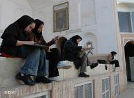
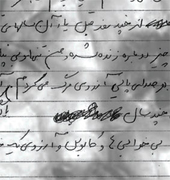
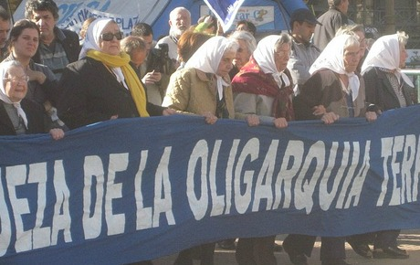
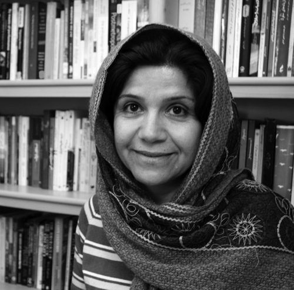
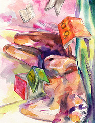

تغییر برای برابری
تغییر برای برابریانتشار اخبار در مورد حداقل سه تجاوز گروهی نه تنها تلنگری به بازخوانی دوباره ی مکانیزم های افریننده ی خشونت در ذهن مسئولان نزد که آنها در اظهار نظرهایی ،دوباره و دوباره زنان را مقصران اصلی معرفی کردند و به این ترتیب خیال خود و جامعه را از بابت وجود پدیده ی تجاوز، خشونت و آزار راحت کردند چرا که چاره هم اکنون در خیابان های شهر است: گشت های ارشاد، پلیس امنیت اخلاقی، ستاد امر به معروف و نهی از منکر.
پذيرش > واژه كليدها > صفحه بندی > ستون وسط
ستون وسط
مقالهها
-

هفته اول تیر ماه با زنان در خبر - تجاوز گروهی, تفکیک جنسیتی, بازداشت
4 ژوئيه 2011 -

کارگاه های مقابله با خشونت و کتابچه روایت های زنانه
27 نوامبر 2010, بوسيلهى koocheاگر چاقو اولین چیزی باشد که در ادبیات مردانه خشونت را به یاد می آورد، روایت های زنان چیز دیگری را نشان می دهد. برای این زنان چاقو اولین خاطره نیست. چه کسی باور می کند برای زنان "سیب زمینی"، "خاکستر سیگار"، "مداد قرمز"، "لک چای روی فرش"، "انگشتر عقیق" و یا آئینه نماد خشونت باشند. زنان هر روز با این نمادها زندگی می کنند و برای اولین بار درباره این نمادها نوشته اند.
-
این روزها که تمام شود ...
25 مه 2009این روزها که بگذرد، این میله ها که تمام شود، لبخند که به لب های مادر برگردد باید کاری کرد باید سهم همه را گرفت، سهم باغبان را از آفتاب، سهم کودک را از خیابان، سهم آزادی را از این میله ها و سهم زنی را که زیر خروارها خاک خفته است از رویاهایش.
-

آرژانتین راه را نشان می دهد / تلاشهای «مادران میدان مایو» برای یافتن کودکان ربوده شده
16 ژوئيه 2012بدون تلاش این مادران و مادر بزرگان، پیدا کردن این کودکان غیر ممکن بود، چرا که به قضیه ربودن کودکان در محاکمات قضائی نظامیان در Rio de la Plata اولویت داده نشده بود. فضای حاکم برمحاکمات بیشترحاکی از بازماندگان ناپدید شدگان بوده است، قریب به 30000 نفر جان خویش را در مبارزه با دیکتاتورهای مختلف آرژانتین از دست دادند...
-
 فعالیت های کمپینی ها برای 25 نوامبر
فعالیت های کمپینی ها برای 25 نوامبر
25 نوامبر 2010, بوسيلهى koocheبرگزاری کارگاه آموزشی و کارگاه نوشتن خلاق با موضوع خشونت علیه زنان، تهیه دفترچه ای از روایت های زنان از خشونت، تهیه بروشورهای آموزشی برای اطلاع رسانی در مورد این روز و اشکال مختلف خشونت علیه زنان و همچنین تهیه پین هایی با موضوع توقف خشونت علیه زنان، از جمله این اقدامات است.
-

سفرنامه ی ایلام؛ دشت های زیبا، دخترکان دلتنگ / مریم زندی
14 مه 2012یک روز قبل از سال جدید راهی سفر می شویم . شب اول را در مدرسه ای نوساز در کرمانشاه می خوابیم. که هم آب گرم دارد و هم حمام. و صبح زود به طرف ایلام راهی می شویم. سال تحویل را در دشت های سر سبز و زیبا می ایستیم و سفره هفت سین را روی تخته سنگی می چینیم. بعد از خوردن صبحانه و اعلام سال نو از رادیو،سکوتی حکمفرما می شود، به فکر فرو می روم مثل هر سال بغض می کنم، به یاد دوستانی که در کنارم نیستند، اما به خودم می آیم و تبریک ها و روبوسی های سال نو شروع می شود. باید راهی شویم. فرصتی برای ایستادن نیست ....
-

فمینیستها و کارگران جنسی: درسهایی از تجربهی هند / ترجمه گلناز ملک
14 ژوئن 2012از نخستین روزهای آغاز موج دوم فمینیسم، مسئلهی "انتخاب" و "خواست" زنان محور اصلی اندیشهی فمینیستی در سراسر جهان بودهاست. تمرکز اصلی فمینیستهای این جریان بر چگونگی ظهور مردسالاری به اشکال مختلف و کنترل زندگی زنان توسط مردان بود. از سازوکار جنسیشان گرفته تا تولید مثل، فعالیت روزانه، شغل، نیروی کار، سرمایه و دسترسی و شرکتشان در حوزهی عمومی و غیره. کنترلی که نهتنها امکان انتخاب زنان را محدود کرده، بلکه اغلب حق انتخاب آنها را به کل انکار میکرد. مسئلهی خواست یا رضایت خاطر زنان از وضعیت خود چیزی بود که همیشه دستمایه تئورسینهای ضد فمینیست و مذهبی جهت توجیه نابرابری جنسیتی قرار میگرفت. متفکرین فمنیست از سوی دیگر، این رضایت زنان را در بستر ناآگاهی زنان از موقعیت خود و در نتیجه همراهی و فرمانبری از قوانین و قوائد مردسالانه بررسی میکردند...
-
 اکوفمینیسم و توسعه پایا / سمیه اصفهانی
اکوفمینیسم و توسعه پایا / سمیه اصفهانی
4 فوريه 2012با ظهور جنبش زنان به خصوص در اواخر قرن بیستم، کنکاش در رابطه بین توسعه و امور مربوط به زنان به دغدغه اصلی بسیاری از سازمان ها و فعالان اجتماعی تبدیل شد. پیش از این زنان به طور تاریخی از چرخه توسعه محروم بودند یا در بهره وری اقتصادی نقش درجه دو داشتند. نظریه مدرنیزاسیون ریشه فقر را عدم مشارکت گروههای سرکوب شده در اقتصاد محلی می پندارد . به همین علت، در این تئوری مدرنیزاسیون، اشکال مختلف توسعه با مفاهیم اقتصادی و بدون در نظر گرفتن جنبه های اجتماعی بیان شده اند. هرچند در این تئوری بر لزوم مشارکت تمام افراد در اقتصاد تاکید شد، اما این تئوری تنها توسط مردان و بدون فهم نقش زنان در توسعه به پیش رانده شد. این تئوری نقطه شروع فعالیت های فمینیست های لیبرال آمریکا در اوایل دهه هفتاد میلادی بود تا از پتانسیل های مثبت آن در جهت پیشبرد منافع زنان بهره جویند...
-
 از روسپی خانه های بمبئی تا پونا: اتحادیه ای برای زنان تنفروش/(2)
از روسپی خانه های بمبئی تا پونا: اتحادیه ای برای زنان تنفروش/(2)
15 مارس 2013"در هند، گروه های مختلف به دلایل مختلف با زنان تنفروش کار می کنند. تعداد کمی از این سازمان ها، خود را ضدقاچاق انسان می نامند و موضوعات خاص خود را دارند. سازمان هایی هم هستند که تمرکز اصلی آنها بر پیشگیری از اچ.آی.وی/ایدز است و آنها هم طرح های متفاوتی دارند و فقط به دلیل پیشگیری از اچ.آی.وی با این زنان کار می کنند. اما این سازمان ها، بیشتر زنان تنفروش را دچار سردرگمی می کنند، چون هیچکس نمی خواهد که خود این زنان را مخاطب قرار دهد. باید دید که خود این زنان واقعا چه می خواهند و خواستار چه تغییراتی هستند. ما که نباید طبق برنامه های سازمان خودمان، برای این زنان تصمیم گیری کنیم"
-
 این نوشته هیچ تیتری ندارد مگر این کلیشه: عدمِ پذیرشِ زنان در بیش از 70 رشته دانشگاهی یا حذفِ تدریجی زنان از عرصههای اجتماعی/ نیلوفر انسان
این نوشته هیچ تیتری ندارد مگر این کلیشه: عدمِ پذیرشِ زنان در بیش از 70 رشته دانشگاهی یا حذفِ تدریجی زنان از عرصههای اجتماعی/ نیلوفر انسان
9 اوت 2012حذفِ پذیرشِ زنان در گروههایی چون گروهِ زبانهای خارجه، حسابداری، روانشناسی عمومی، تاریخ، راهنمایی و مشاوره، مهندسی کامپیوتر و رشتههایی دیگر از این دست که هر کدام تا پیش از این فارغالتحصیلانِ زنِ بیشماری را به خود دیده است که اتفاقا هر کدام در زمینهی تحصیلیِ خود مشغولِ به کار بودهاند و درآمدهای خوبی را نیز کسب کردهاند، تنها به سببِ تفکیکِ جنسیتی نیست. بلکه به معنای سد بستن به روی درآمدزاییِ زنان و به معنای بستنِ دستِ زنان برای داشتنِ شغلی از آنِ خود و به طبعِ آن استقلالِ مالی است...
0 | ... | 260 | 270 | 280 | 290 | 300 | 310 | 320 | 330 | 340 | ... | 450